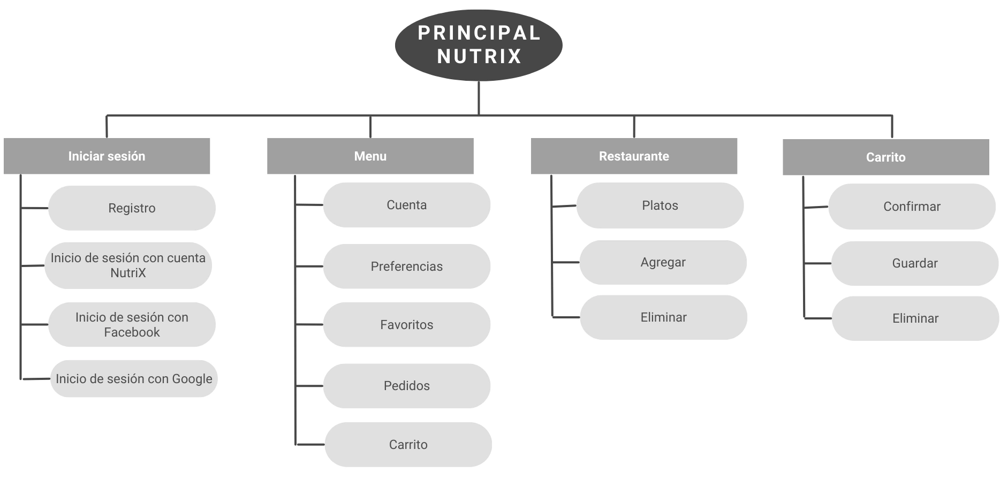

Caso Práctico 1
Proyecto: NutriX
Eleonora Rodríguez
Resumen del proyecto
El Producto
NutriX es una app móvil de pedidos de comidas a domicilio. Su particularidad es que cada plato ofrecido incluye la lista de ingredientes y su aporte calórico.
Duración
Dos meses (abril y mayo de 2023).
El Problema
Los usuarios quieren alimentarse conscientemente y saber los ingredientes y aportes calóricos de las comidas que consumen.
El Objetivo
Proveer un catálogo centralizado de fácil acceso, con motor de búsqueda, para que los usuarios puedan acceder a los valores nutricionales y calóricos de los platos previamente a hacer pedidos a domicilio.
Mi Rol
Diseñadora UI e investigadora UX.
Responsabilidades
Investigación de usuarios, creación de recorridos de usuario, creación de esquemas, creación de prototipos de baja y alta fidelidad.
Investigación sobre los usuarios
En esta investigación nos enfocamos en lo que busca la audiencia que tenemos como objetivo y los potenciales clientes.
En base a la competencia, les preguntamos lo que les falta y lo que podemos aportar con nuestro proyecto.
Puntos débiles de los usuarios
Cercanía
La mayoría de los usuarios encuestados se desmotiva al ver que los restaurantes a veces se ubican demasiado lejos de sus cercanías. Esto también se relaciona con el punto débil 3 (demoras).
Salud
Los usuarios no cuentan con una opción de envíos de comida a domicilio que también incluya los datos nutricionales de los alimentos incluidos.
Demoras
Relacionado con el punto débil 1 (cercanía). La mayoría de los usuarios desea recibir su pedido en menos de 30 minutos.
Persona 1
Emilia Gómez
Planteamiento del problema: Emilia Gómez es una nutricionista de 24 años que necesita acceso a un servicio como NutriX para sí misma y para ayudar a sus pacientes.
Edad: 24
Formación: Universitaria
Localidad: Buenos Aires
Familia: Soltera
Ocupación: Nutricionista
"Mi cuerpo es mi templo, y te ayudaré a cuidar el tuyo también."
Emilia Gómez es una nutricionista de 24 años que vive en la Ciudad Autónoma de Buenos Aires. En su ejercicio como nutricionista se encuentra a diario con pacientes que tienen dificultades para calcular las calorías de las comidas compradas en restaurantes y enviadas a sus domicilios. Tanto ella como sus pacientes podrían beneficiarse con las funcionalidades de una app como NutriX.
Objetivos:
- Quiero estar saludable y en forma.
- Quiero poder ayudar a mis pacientes a cuidar su salud más fácilmente.
- Quiero conscientizar a la sociedad acerca de una alimentación balanceada y saludable.
Frustraciones:
- Cuando hago pedidos de comidas a domicilio, no encuentro en ninguna parte cómo están hechos ni de qué ingredientes están compuestos.
- Tampoco están disponibles los aportes calóricos de las comidas.
- Todo esto, además de afectarme a mí, también afecta a mis pacientes.
Persona 2
Roberto Rivas
Planteamiento del problema: Roberto Rivas es un hombre de 52 años que desea mejorar su salud y su calidad de vida.
Edad: 52
Formación: Bachillerato
Localidad: Buenos Aires
Familia: Divorciado, tiene dos hijos mayores
Ocupación: Administrativo
"Nunca es tarde para mejorar."
Roberto Rivas es un empleado administrativo de 52 años. Está divorciado, vive solo y tiene dos hijos mayores de edad. Quiere comenzar a cuidar su salud para llegar en forma a la vejez. Siempre le frustró no comprender las tablas nutricionales en los empaquetados, ni poder disponer del tiempo suficiente para leerlos antes de comprarlos. Esto también aplica a sus hábitos al momento de pedir envíos de comidas a su domicilio.
Objetivos:
- Quiero ponerme en forma y llegar a la vejez con buena salud.
- Quiero alimentarme más conscientemente.
Frustraciones:
- No tengo tiempo de leer las etiquetas de todos los productos que compro.
- A veces quiero darme gustos pero no encuentro en ninguna parte las calorías de las comidas al momento de pedir alimentos a domicilio.
Mapa del sitio
Prototipo de baja fidelidad (tamaño desktop/escritorio):
Prototipo de baja fidelidad (tamaño tablet):
Prototipo de baja fidelidad (tamaño móvil):
Estudio de usabilidad
Parámetros
Tipo de estudio: Moderado
Ubicación: Buenos Aires, Argentina
Participantes: 5
Duración: 30 minutos
Hallazgos
Hallazgo 1: Los usuarios pidieron más opciones para volver entre páginas fácil y rápidamente.
Hallazgo 2: Los usuarios quisieron que se incluyeran los tiempos de demora en los envíos.
Hallazgo 3: Los usuarios pidieron más opciones de métodos de pago.
Prototipo de alta fidelidad (tamaño desktop/escritorio):
Prototipo de alta fidelidad (tamaño tablet):
Prototipo de alta fidelidad (tamaño móvil):
Consideraciones de accesibilidad
Para la elección de la paleta de colores, se tomaron en cuenta las personas con posibles problemas de visión que no pudieran distinguir bien entre ellos.
Todos los íconos se encuentran complementados por palabras para facilitar la lectura en dispositivos de asistencia para quienes tienen problemas visuales.
El diseño intenta no abrumar a los usuarios con demasiadas cosas juntas en un mismo espacio. Se dejaron espacios negativos en blanco para que la navegación sea más agradable y menos confusa.